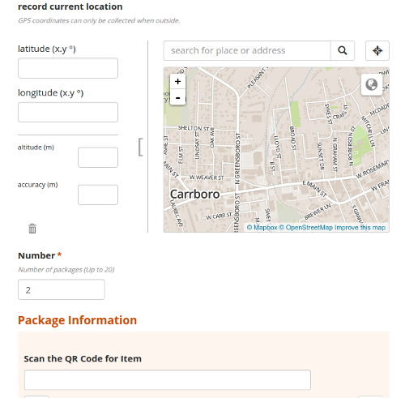

Data Visualization
Tracking Packages with Ona, Celery, and Leaflet
David Ray
September 18, 2014
Who Am I?
- Sales Engineer & Developer at Caktus
Who Am I?
{% if lightning_talk %}
{{ who_am_i|truncatechars:0 }}
{% endif %}
What are we talking about?
- Toolchain used to render package scans on a map
What are we talking about?
- Toolchain used to render package scans on a map
- Gotcha discovered along the way
Background
- Client tracks 100,000s of packages
Background
- Client tracks 100,000s of packages
- Shipments contain Packages with QR Codes
Background
- Client tracks 100,000s of packages
- Shipments contain Packages with QR Codes
- Packages are scanned with mobile devices during transit
Background
- Client tracks 100,000s of packages
- Shipments contain Packages with QR Codes
- Packages are scanned with mobile devices during transit
- Where is my stuff and how did it get there?
Where is my stuff and how did it get there?

CC BY-SA 2.0 Filip Federowicz
Components
Ona
ODK Collect
Celery
Hstore
GeoDjango
Leaflet
Ona
SaaS for collecting form submissions from mobile/web devices
Ona
Forms defined via XLSForm
Ona
| survey | |||
|---|---|---|---|
| type | name | label | |
| select_multiple pizza_toppings | favorite_toppings | What are your favorite pizza toppings? | |
| choices | |||
| list name | name | label | |
| pizza_toppings | cheese | Cheese | |
| pizza_toppings | pepperoni | Pepperoni | |
| pizza_toppings | sausage | Sausage |
Ona
Web Form
ODKCollect
- Android App for offline mobile data collection
ODKCollect
- Android App for offline mobile data collection
- VERY important as phones do not have SIM card
Ona
Retrieve submissions API via Django Rest Framework
Ona
Retrieve submissions API via Django Rest Framework
Yay!!!
Celery
Task to ingest and record form submissions to the app database
Celery
@app.task
def update_package_locations():
"""Updates the local database with new package tracking form submissions"""
form_id = settings.ONA_PACKAGE_FORM_ID
client = OnaApiClient()
submissions = client.get_form_submissions(form_id)
for data in submissions:
submission = PackageLocationFormSubmission(data)
if not FormSubmission.objects.filter(uuid=submission._uuid).exists():
FormSubmission.from_ona_form_data(submission)
Models
- FormSubmission model with Hstore field
- Location model with GPS coords
- Record location instance for each package scan per form submission
Models -- GeoDjango
- Location instances need to know what Country they are in
- WorldBorders via default GeoDjango tutorial
Models -- GeoDjango
- Location instances need to know what Country they are in
- WorldBorders via default GeoDjango tutorial
def save(self, *args, **kwargs):
if not self.country:
point = 'POINT (%s %s )' % (self.longitude, self.latitude)
qs = WorldBorder.objects.filter(mpoly__contains=point)
if qs:
self.country = qs[0]
super(Location, self).save(*args, **kwargs)
Data Visualization — Mapping
Integration via django-leaflet
Data Visualization — Mapping
Renders unique locations (lat/lng) per shipment
Maps Issues
- django-leaflet configuration limited
LEAFLET_CONFIG = {
'DEFAULT_CENTER': (34.81, 39.04),
'DEFAULT_ZOOM': 8,
'MIN_ZOOM': 3,
'MAX_ZOOM': 18,
'RESET_VIEW': False,
'PLUGINS': {
'cluster': {
'css': [
'lib/Leaflet.markercluster/MarkerCluster.Default.css',
'lib/Leaflet.markercluster/MarkerCluster.css'
],
'js': 'lib/Leaflet.markercluster/leaflet.markercluster.js',
'auto-include': True,
},
},
'TILES': [
('ESRI', 'http://server.arcgisonline.com/ArcGIS/rest/services/World_Street_Map/MapServer/tile/{z}/{y}/{x}', ''), # noqa
('OSM', 'http://{s}.tile.openstreetmap.org/{z}/{x}/{y}.png', ''),
]
}
Maps Issues
- Custom JS callback to inject additional configuration
function render_map(map, data) {
var Polylines = {};
var markerList = [];
var markers = L.markerClusterGroup({disableClusteringAtZoom: 12});
for (var i = 0; i < data.shipments.length; i++) {
var shipment = data.shipments[i];
var shipment_locs = [];
for (var idx = 0; idx < shipment.locations.length; idx++) {
var scan_no = idx+1;
var loc = shipment.locations[idx];
var lat_lng = L.latLng(loc.latitude, loc.longitude);
shipment_locs.push(lat_lng);
// Create the waypoint(s)
var waypoint = ['Scan ' + scan_no + ' on: ' + loc.when + '
Shipment ' + shipment.descr, loc.latitude, loc.longitude];
marker = new L.marker([waypoint[1],waypoint[2]], {icon: L.divIcon({html: scan_no, iconSize: null, className: 'waypoint'})})
.bindPopup(waypoint[0]);
markerList.push(marker);
}
Polylines["polyline" + i] = L.polyline(
shipment_locs
,{
weight: 4,
readOnly: true,
color: shipment.colour
}).addTo(map);
}
markers.addLayers(markerList);
map.addLayer(markers);
} Maps Issues
- 1000s of points to render
Maps Issues
- 1000s of points to render
- Use Leaflet.markercluster to mitigate
Marker Clusters
Marker Clusters Gotcha!
Marker Clusters Gotcha!
Do not disable clustering if you need spidering
var markers = L.markerClusterGroup({disableClusteringAtZoom: 12});

Marker Clusters Gotcha!
Set Tileset Max Zoom if you need spidering
LEAFLET_CONFIG = {
...
'MAX_ZOOM': 16,
...
}
Maps Issues
- Leaflet missing helper methods
Maps Issues
Clear Layers
function clearMap(map) {
for(i in map._layers) {
if(map._layers[i]._path != undefined || map._layers[i]._popup != undefined || map._layers[i]._needsRemoving != undefined ) {
try {
map.removeLayer(map._layers[i]);
}
catch(e) {
console.log("problem with " + e + map._layers[i]);
}
}
}
}
Maps Issues
Programmatically Recenter & Zoom Map
if ($.isEmptyObject(markers._featureGroup._layers)) {
map.panTo(map.options.center);
map.setZoom(map.options.zoom);
} else {
map.fitBounds(markers.getBounds())
}
Maps Issues
How do I do X in Leaflet?
Maps Issues
How do I do X?
console.log(map_component) is your friend
Questions!??!?
Links!
https://play.google.com/store/apps/details?id=org.odk.collect.android&hl=en
https://docs.djangoproject.com/en/dev/ref/contrib/gis/tutorial/
https://github.com/djangonauts/django-hstore